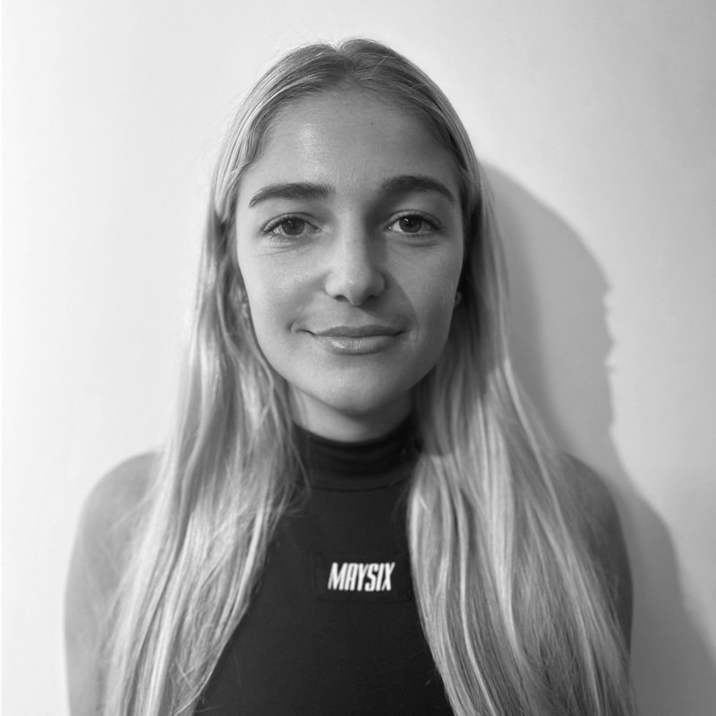

Product Design | UX & UI Designer | Frontend Developer
I'm a digital product designer with a background in industrial design, UX/UI, and front-end development. I specialize in user-centered design and enjoy combining creativity with strategy to solve problems and deliver meaningful experiences. I’ve worked on internal tools, e-commerce sites, CRM optimizations, and cross-platform content. I’m passionate about research, prototyping, accessibility, and collaborating with multidisciplinary teams. Currently focused on growing as a Product Designer and contributing to innovative, human-centered products.
